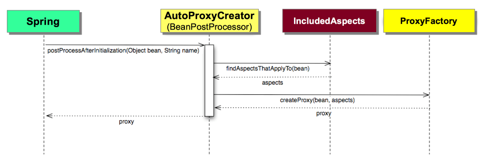
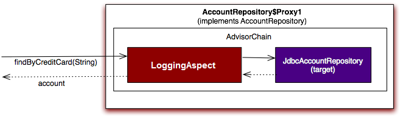

Purpose
In this lab you will gain experience with aspect oriented programming (AOP) using the Spring AOP framework. You’ll add cross-cutting behavior to the rewards application and visualize it.
Learning Outcomes
What you will learn:
- How to write an aspect and weave it into your application
Specific subjects you will gain experience with:
- Spring AOP using annotations
- Writing pointcut expressions
You will be using the 22-aop project.
Estimated time to complete: 35 minutes.
Notes for This Lab
-
The JUnit tests you will run in this lab already work. Just getting a green test does not indicate success. You must also get logging messages in the console.
-
Students often find this one of the hardest labs. If you get stuck please ask a colleague or your instructor - don’t waste the whole lab trying to fix your first pointcut expression.
Use Case
Up until now you have used Spring to configure and test your main-line application logic. Real-world enterprise applications also demand supporting services that cut across your main-line logic.
An example would be logging: There may be many places in your application where you need to log data for monitoring. Historically, this may have lead to copying-and-pasting code, or entangling your application code with infrastructure. Today, you turn to aspect oriented programming (AOP).
In this lab you will fulfill two non-functional requirements in the Rewards application.
- REQUIREMENT 1: Create a simple logging aspect for repository find methods.
- REQUIREMENT 2: Implement an
@AroundAdvice which logs the time spent in each of your repository update methods.
Quick Instructions
If you are already knowledgeable with the lesson concepts, you may consider jumping right to the code, and execute the lab in form of embedded TODO comments. Instructions on how to view them are here.
If you aren’t sure, try the TODO instructions first and refer to the lab instructions by TODO number if you need more help.
Instructions
Implement a Logging @Before Aspect
Check Console Output
The tests you use in this lab already run successfully. Adding an aspect to a class does not necessarily change what that class does, often it just extends its functionality. In this lab you will add extra logging, so not only must tests pass, there should be the expected logging on the console.
Capturing output to the console means diverting System.out and
System.err and saving all output to an internal buffer.
Fortunately Spring Boot provides a convenient class to do this,
OutputCapture, which can be used independently of the rest of Spring
Boot.
All the tests already have output-capture enabled, but currently output
testing is turned off (until you write some aspects, there is no logging
to check).
TODO-01: Setup Tests to enable console output
-
Open
TestConstantsclass. -
Change the
CHECK_CONSOLE_OUTPUTboolean totrue.
Create Logging Aspect
For the first non-functional requirement implemented in this lab, you
will first define the logging behavior, then the rules to log the
repository find methods.
You’ll use the annotated @Aspect definition style.
TODO-02: Annotate and wire the logging aspect
-
The definition of the aspect has already been started for you.
-
Find it in the
rewards.internal.aspectspackage. -
Open the
LoggingAspectclass and you’ll see several TODOs for you to complete. -
Annotate the
LoggingAspectclass with the@Aspectannotation. -
Why did you do this?
The
@Aspectannotation will indicate this class is an aspect that contains cross-cutting behavior called "advice" that should be woven into your application.The
@Aspectannotation marks the class as an aspect, but it is still not a Spring bean. Component scanning can be very effective for aspects, so mark this class with the@Componentannotation. -
Optionally place an @Autowired annotation on the constructor. (It is optional since there is only a single constructor in the class.)
You will see where this dependency comes from and turn on the actual component scanning in a later step.
TODO-03: Define logging aspect pointcut expression and its advice
You will not log every method of your application, only a subset.
At this stage, you are only interested in logging the find* methods in
your repositories, the objects responsible for data access in the
application.
-
Try to define a pointcut expression that matches all the
find*methods, such asfindByCreditCard(), in theAccountRepository,RestaurantRepository, orRewardRepositoryinterfaces. -
If you get stuck - refer to the pointcut examples in the slides. Alternatively, try writing a pointcut expression that just matches
find*methods, similar to the setter method example in the slides. You can make it more specific later. -
Add
@Beforeadvice annotation on theimplLogging()method which has already been implemented for you.It takes a
JoinPointobject as a parameter, and logs information about the target objects invoked during the application execution.
Configure Spring to Weave the Aspect into the Application
TODO-04: Configure and weave logging aspect
Now that your aspect has been defined, you will create the Spring configuration needed to weave it into your application.
-
Inside the
config/AspectsConfigconfiguration class, add an annotation to scan for components ONLY in therewards.internal.aspectspackage. -
This will cause your
LoggingAspectto be detected and deployed as a Spring bean. -
Add
@EnableAspectJAutoProxyannotation to this class.This instructs Spring to process beans that have the
@Aspectannotation by weaving them into the application using the proxy pattern. This weaving behavior is shown graphically below:
This following shows the internal structure of a created proxy and what happens when it is invoked:

Note that
@EnableAspectJAutoProxyannotation is redundant for Spring Boot application since it will be automatically added through auto configuration - seeAopAutoConfigurationclass.
Test the Aspect Implementation
TODO-05: Plug in logging aspect to application system test config
- Modify the
@Importto includeAspectsConfig.classin theSystemTestConfigconfiguration class.
TODO-06: Run the logging aspect test
-
Run
LoggingAspectTestin your IDE and watch the console. You should see:INFO : rewards.internal.aspects.LoggingAspect - 'Before' Advice implementation - class rewards.internal.account.JdbcAccountRepository; Executing before findByCreditCard() method -
If you don’t see any console output your pointcut expression is likely wrong. Refer back to the notes for TODO-03 and see if you can fix it.
-
When you see the logging output, your aspect is being applied.
-
If you wrote a very general pointcut expression earlier, as suggested by these notes (just
find*methods), try to make it more specific to matchfind*methods on*Repositoryclasses.
Implement an @Around Performance Monitor Aspect
For the second non-functional requirement implemented in this lab, you
will build upon the LoggingAspect, and adding behavior to log timing
of repository update methods.
-
Return to the
LoggingAspectclass -
Examine the
monitor(ProceedingJoinPoint)method. Most of the method has been implemented for you. -
Complete the code for the method.
TODO-07: Define pointcut expression
-
Specify
@Aroundadvice for themonitormethod. -
Define a pointcut expression that matches all the
update*methods (such asJdbcAccountRepository.updateBeneficiaries(...)on theAccountRepository,RestaurantRepository, orRewardRepositoryinterfaces. -
There is a HINT in the TODO Text if you are stuck.
TODO-08: Implement the advice
-
Review the
monitor(ProceedingJoinPoint)method.Notice the Monitor start and stop logic has already been written for you. What has not been written is the logic to proceed with the target method invocation after the watch is started.
-
Complete this step by adding the
proceedcall.Remember, the call to
repositoryMethod.proceed()returns the target method’s return value. Make sure to return that value out, otherwise you may change the value returned by a repository!
TODO-09: Update test
-
Modify the
expectedMatchesinRewardNetworkTestsclass because now there should be 4 lines of logging output not 2. -
Run the test.
If the test passes and you can see relevant logging information in the console, your monitoring behavior has been implemented correctly.
(Optional) - Exception Handling Aspect
Create an exception handling aspect as follows:
TODO-10: Add advice for exception handling
-
Modify the
DBExceptionHandlingAspectclass by annotating the methodimplExceptionHandling(Exception e)to be used in the event of an exception. -
Which type of advice will you need?
-
Add the advice annotation to this method and define a pointcut expression that matches all the methods in any of the three repositories (regardless of the method names).
TODO-11: Wire the aspect for component scan
-
Although this class is presently marked as an
@Aspect, it isn’t defined as a@Component, and therefore it is not picked up when component scanning. -
Add a
@Componentannotation to the top of the class.
TODO-12: Run aspect tests
-
Run
DBExceptionHandlingAspectTestsin your IDE and watch the console. -
If you can see relevant logging information in the console, your exception handling behavior has been implemented correctly.
Summary
Congratulations, you’ve completed the lab!